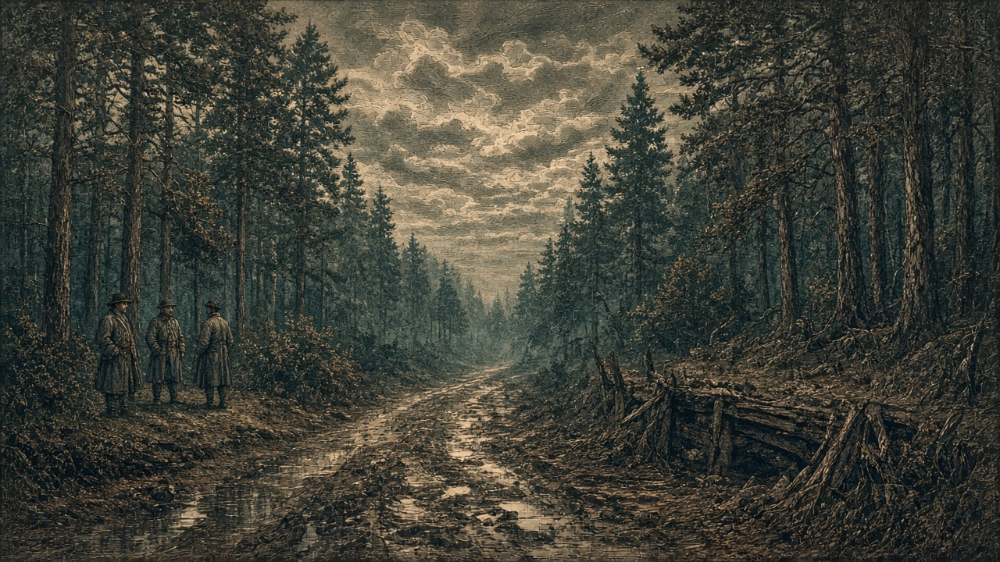

泰平軍、アルガの兵站基地を占領
首都守備隊にも打撃
基地に残った予備兵1,000人が投降 帝国第1軍歩兵と第3軍砲兵が消滅

【総合部】泰平天国軍は第141期、アルガリスト帝国の兵站基地（47,39）を占領した。基地に残っていた予備兵1,000人は泰平軍に投降し、同軍の捕虜となった。基地跡は泰平領の森に変わった。
泰平第20軍の砲兵は首都アルガリストの区画にいた帝国第1軍の歩兵を攻撃し、部隊を消滅させた。帝国第3軍の砲兵も同軍の攻撃で消滅した。首都は引き続き帝国領だが、守備部隊と兵員補充の拠点を相次いで失った。
今期の戦果は泰平8,200人、帝国1,000人。累計では泰平69,700人、帝国20,500人に達した。詳報2面。
味方を巻き込んで守った兵站、翌期には敵軍の手に
今回占領された兵站基地（47,39）は、前期にアルガリスト帝国軍が敵兵を排除するため、自ら対人ミサイルを撃ち込んだ場所である。基地には味方も残っていたが攻撃を敢行し、多数の負傷者が出た。
第141期にも同じ基地へ帝国軍のミサイルが落ち、多くの人が負傷した。基地は結局、泰平軍に占領され、残っていた予備兵1,000人が投降した。ミサイルの着弾と占領の期内の前後関係は明らかではない。
「昨日はあの基地を守るために味方まで巻き込んで撃ったと聞いた。それが今日は泰平軍のものになった。何のための攻撃だったのか」。首都の男性は兵站基地の陥落を聞いて憤った。
首都の歩兵消滅 帝国第3軍砲兵も失う
首都区画では第1軍歩兵が消滅し、別の交戦で第3軍砲兵も失われた。帝国軍の兵力は前期の30,700人から28,700人へ減少した。泰平軍は662,300人から678,300人に増え、両国の兵力差が広がった。
3か国で火災 死者47,100人
【社会部】チェス＝シロバキア共和国で27,300人、なのです主義人民共和国で15,700人、泰平天国で4,100人が火災で死亡した。計47,100人。なのですの工場（25,63）は焼けて荒地となった。詳報4面。
カペレナ、黒潮首都へ艦砲射撃 基地に命中
【軍事部】カペレナ王国の戦艦は黒潮自治国の首都区画へ艦砲射撃を行い、ミサイル基地（21,17）に1発が命中した。首都は雨で、黒潮の支配下にある。前期には商船が撃沈され、兵站基地も占領された。詳報3面。
シンジケート、海底都市を建設 場所は記録に載らず
【国際部】シンジケート連邦は第141期、新たな海底都市を建設したが、公開された記録に座標は記されていない。前期に建設された西方海域（6,78）の都市も、今期の海図では海として表示されている。詳報4面。
アルガリスト帝国軍は、ついに兵站基地（47,39）を失った。前期、敵兵の入った基地へ自軍のミサイルを撃ち込み、味方にも多数の負傷者を出した。今期も同じ施設への攻撃を続けたが、基地は泰平軍の手に渡った。
基地に残った予備兵1,000人は投降した。首都区画の歩兵と帝国第3軍砲兵も消滅した。兵站と戦闘部隊を同時に失ったことは、帝国軍の防衛に重くのしかかる。
帝国軍の兵力は28,700人。泰平軍は678,300人を擁し、兵力差は前期より広がった。市街地が帝国領に残っていても、戦争を支える拠点と守備部隊が失われれば防衛は厳しくなる。
自軍兵員を巻き込む攻撃まで行った基地を守れなかった重みは小さくない。残る部隊をどう配置し、首都防衛を維持するのか。アルガリスト帝国は厳しい局面を迎えている。